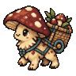
背篓菌宠
偏爱卷心菜
均衡追击 1 次
一个简单的三轴转轮，一套会吞噬生命的规则，一条通往第 60 关的路。
每次转动默认消耗 2 点生命——转轮从操作者身上抽取"生命时间"作为启动代价。三轴自动依次停止，你无法反悔，不能锁轮。
裂刃、炽焰、霜晶、时针、涡流——五种图案按同数连携放大伤害。三个相同图案将触发爆发，一击把多余伤害溢出到剩余的怪物。
击败 Boss 获得挂件，重复挂件可以叠加。回流叶轮每 4 次攻击溅射、过载灯满 8 次清场——构筑属于你自己的转轮流派。
生命值可以跌破 100 也能超过 100。击杀怪物掉落的血包，既修复身体，也抑制局部时间错位——它能在一次致命转动后把你救回来。
同屏多只怪物时，点击选择集火目标。溢出伤害会继续传递给其他怪物——一次三连同图，可能连斩三只怪。
阶段 Boss 拥有单次伤害上限、阶段护盾、减伤光环等机制。第 60 关由双 Boss 同时坐镇，全部击败才能通关。
60 关 = 30 独特生态 × 2 个环回。关卡越深，时间回涌给你的惩罚越具体——直到双 Boss 一起降临在净化核心。
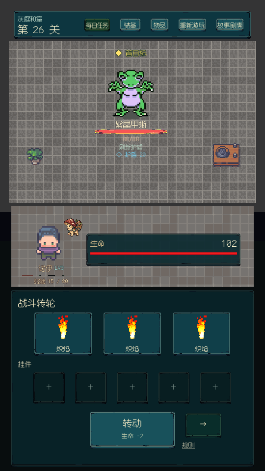
单体 Boss 不带护卫，但它每回合刷新 20 点护盾——你得在护盾与减伤的夹缝里攒足输出。单轴炽焰 LV3 三连只有 35 点，破盾窗口只有几个回合。
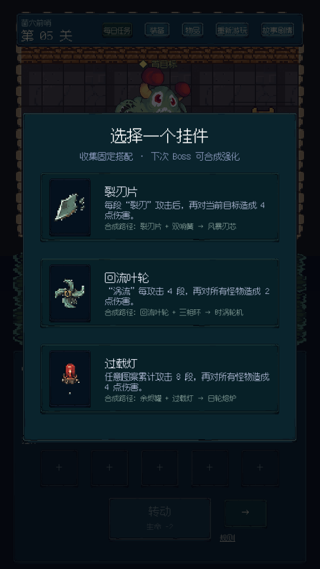
挂件三选一，重复可叠加。裂刀片专攻单体、回流叶轮溅射清场、过载灯满能量爆发——你的流派从这一刻开始成型。
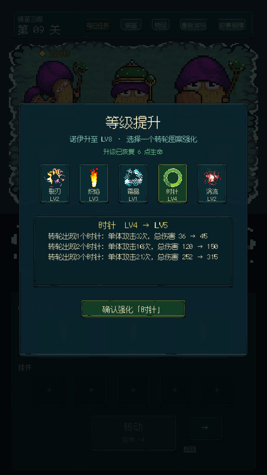
诺伊升至 LV.8，选择一个图案强化。时针 LV.4 → LV.5，三连同图伤害从 252 点涨到 315 点——一切数值实时可见。
每次冒险都会沉淀成下一次出发的底气。装备、套装、合成与宠物喂养跨局保留，把战斗掉落和据点收成串成一条完整成长线。
普通怪与 Boss 都会掉落，越深入地牢，越有机会拿到高品质词条。
五个防具位各有主属性；同套穿 2 / 3 / 5 件，逐步激活套装能力。
同部位、同品质装备可升阶，从普通一路成长到传说与逆时品质。
宠物吃作物升级，达到 LV.10 后加入战斗，在每轮攻击后发动追击。
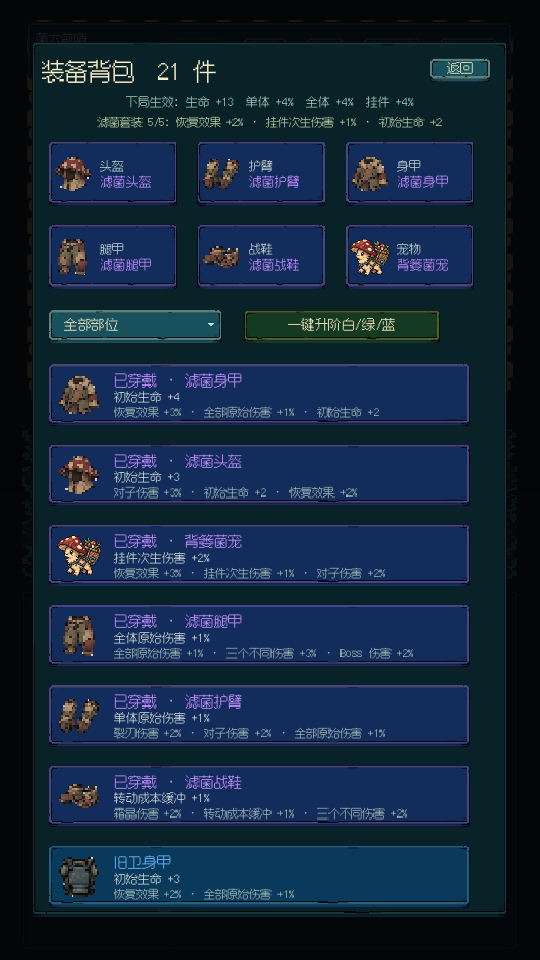
头盔、护臂、身甲、腿甲、战鞋分别强化生命、单体、群体和转动成本。拾荒、滤菌、管务、矿勤、旧卫五套装备，让你在生存、挂件、涡流、裂刃与 Boss 战之间取舍。
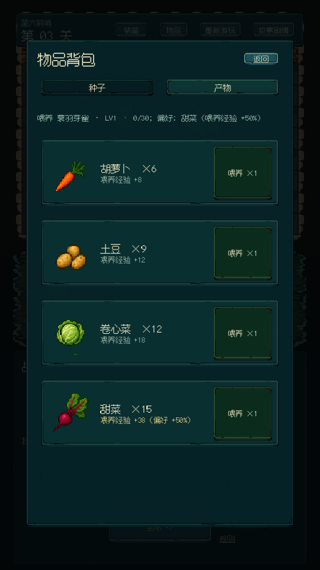
四种宠物各自偏爱一种作物，喂对食物会额外获得 50% 经验。宠物等级随装备个体保留；合成同类宠物时，培养进度也会继承到新伙伴身上。

偏爱卷心菜
均衡追击 1 次
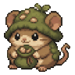
偏爱胡萝卜
连携追击 2 次
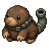
偏爱土豆
高伤重掘 1 次
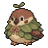
偏爱甜菜
轻羽追击 3 次
战斗救人类，农地喂肚子。新据点里的 20 块沃土、木槽围栏和吉普赛商人的货车，让你冒险之外的每一分都实体可查。
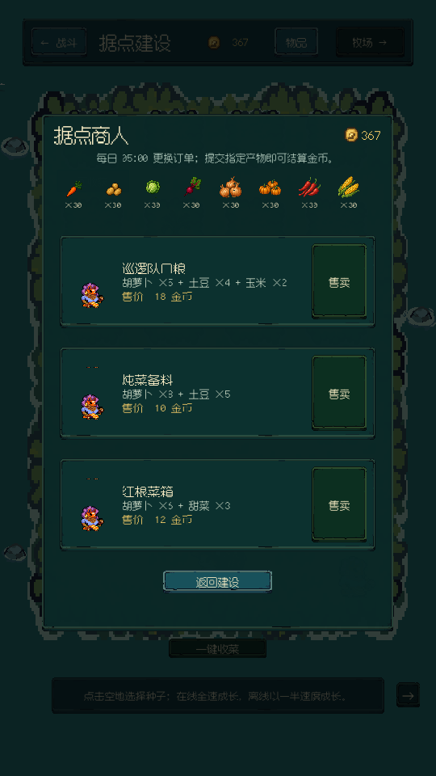
胡萝卜 5 分钟、南瓜 18 分钟、辣椒 30 分钟——成熟后一次收 2~4 个；每天 05:00 吉普赛商人会更新收购单。
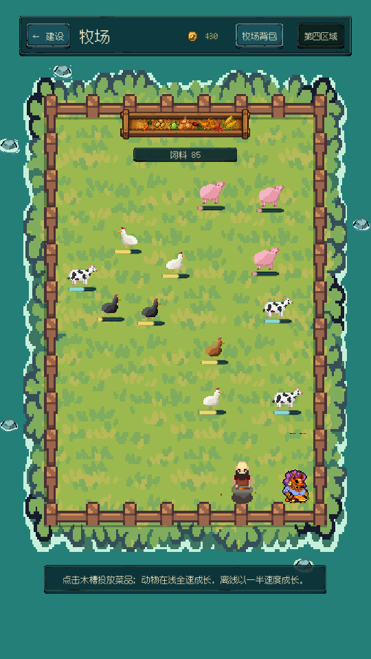
小鸡 18 金、奶牛 95 金、猪 45 金。喂饱了它们回头就走——你要常点木槽添菜维持伙食。鸡到点会自己下蛋，奶牛按需要挤奶，猪到 300kg 就该联系屠夫。
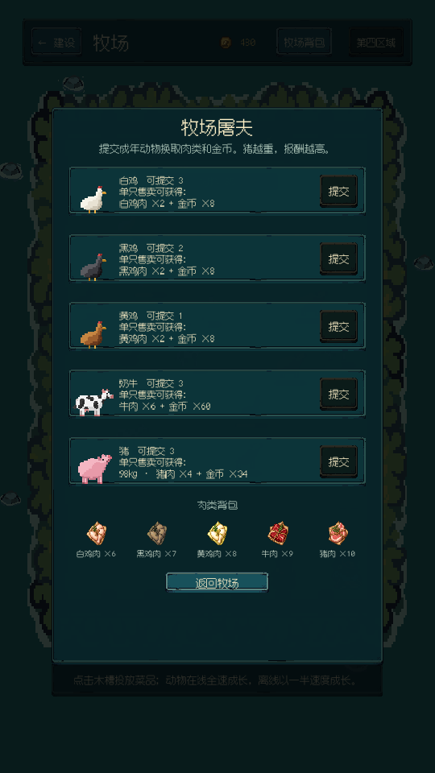
白鸡能换 2 块白鸡肉 + 8 金币；98kg 的猪是 4 块猪肉 + 9 金币——肥到 300kg 才配叫满额。肉类先扣下一部分喂给你的农场宠物，剩下贩卖抵扣屠夫委托费用。
30+ 种怪物按族系推进：菌菇 → 回声兽 → 晶甲 → 甲壳 → 龙族。每一种都有你不愿直面的机制。
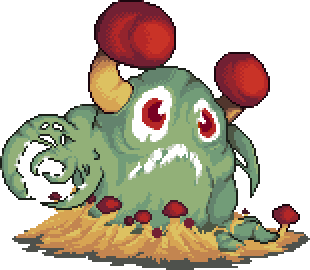
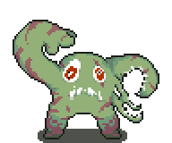
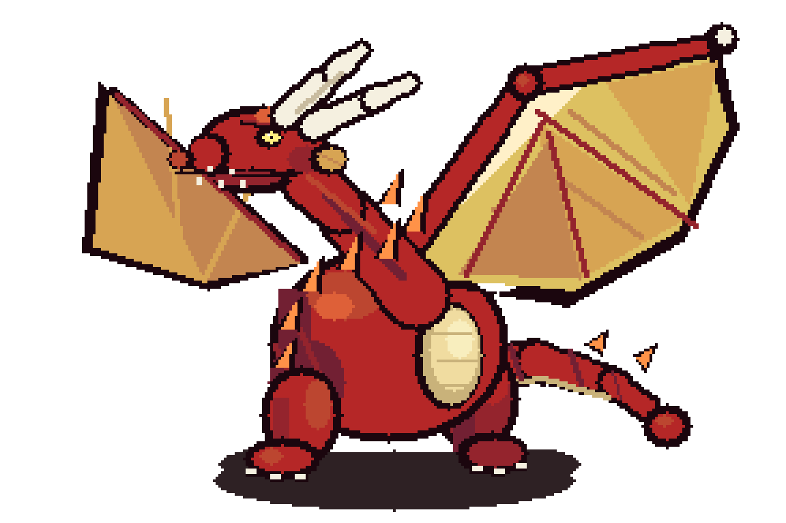
镜像变体：每种怪都有 b 级镜像形态——碧帽菌、紫药菌、镜鸣兽、镜像回声母体。属性与机制全面强化，并附带更高的转动成本光环。在后期关卡，你需要学会"先解光环，再打本体"。
当前处于测试版意向征集阶段。使用微信扫描二维码，添加时备注「Chrono Mini 测试」，申请体验资格。